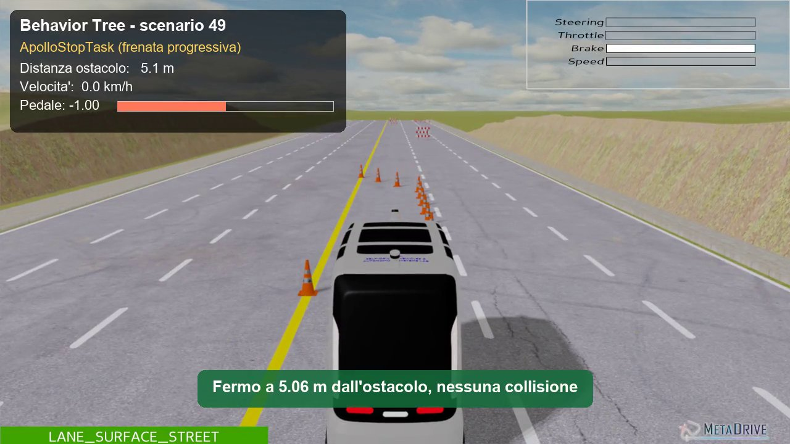
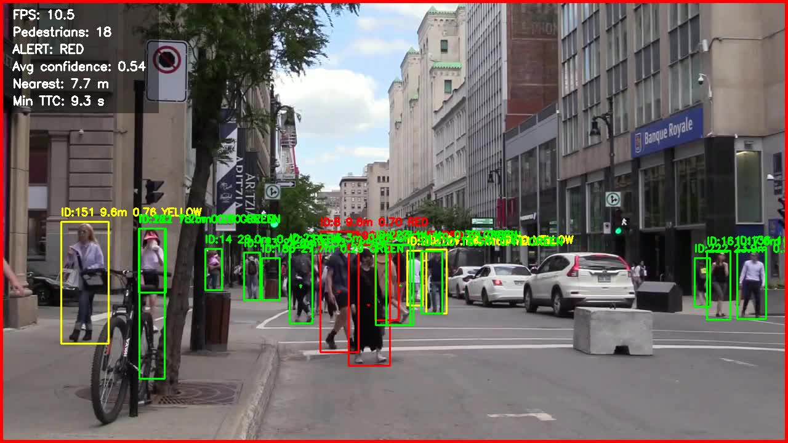
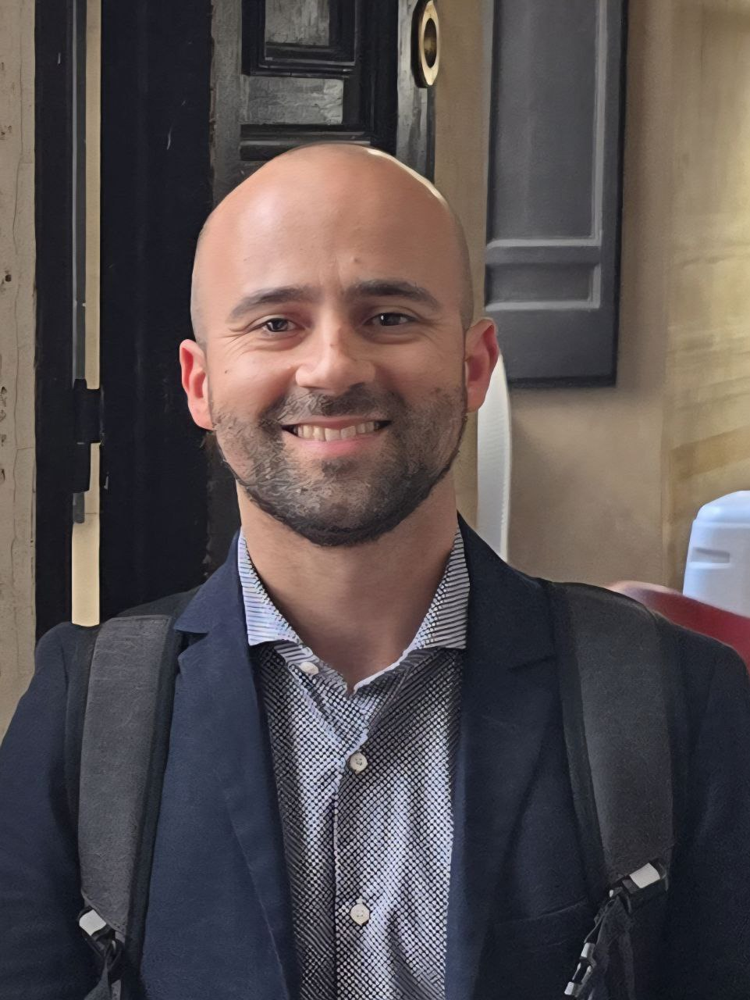

Robotics & Autonomous Driving
Behaviour trees, path planning, and control interfaces for autonomous vehicles. Connected to the iseAuto-TalTech open-source project.
Co-designing software and hardware for intelligent systems that sense, decide, and act in the physical world.
The ACS vLab is a virtual laboratory for applied research and software engineering. We develop and maintain prototypes emerging from student theses and applied research, turning them into documented, reusable projects.
Across robotics and autonomous driving, AI and machine learning, simulation, and cloud and DevOps, we explore how software interacts with real and simulated systems. Our focus is software–hardware co-design: connecting code with the sensors, machines, and environments it operates in.
Projects are shared through the ACS vLab GitHub organization, where version control, code review, and clear documentation help preserve results beyond a single thesis and give students experience with professional open-source development.
Behaviour trees, path planning, and control interfaces for autonomous vehicles. Connected to the iseAuto-TalTech open-source project.
Pedestrian detection systems with YOLOv8, object tracking with ByteTrack, and monocular distance estimation for ADAS.
Testing intelligent systems in simulated environments using C++ and Python, with ROS integration and real-world open datasets.
Centralised versioning, branch protection, mandatory pull request reviews, and rigorous documentation standards for every project.

Thesis project — Alessandro Scala. Behaviour tree implementation for autonomous vehicle decision-making.
MIT
Thesis project — Aleo. Pedestrian detection for ADAS with YOLOv8, ByteTrack, and monocular distance estimation.
AGPL-3.0Shared example code repository for the Programming course at Universitas Mercatorum.
GPL-3.0
Universitas Mercatorum
His work in robotics and AI focuses on complex robotic systems that bring perception, autonomy and decision-making together in real-world environments, spanning mobile robotics, autonomous driving and intelligent perception. he is also an adjunct professor at Tallinn University of Technology.

Universitas Mercatorum
His research spans computer vision and deep learning, especially human behavior understanding in retail and fashion. His interests include action recognition, tracking, object detection and vision-language models; he is also an adjunct professor at Università Politecnica delle Marche.